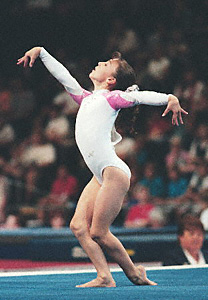

Kristal Uzelac (USA)
1999-2001 Jr. USA Champion
2001 American Cup AA Bronze Medalist

Kristal was born on June 27, 1986,
in Johnstown, PA, and trained at the Parkettes in Allentown, PA, for many
years. A very promising and strong junior gymnast (she's the first gymnast
to win the junior US title for three
years in a row), Kristal's senior career
was hampered by injuries. She took some time away from the sport in 2003
and resumed training in early 2004, with a goal of making the US Olympic
team. Her ninth-place finish at the
2004 US Classic qualified her for the
US Championships, but Uzelac announced her retirement prior to
Championships. In fall 2004 she entered Penn State University on a full
gymnastics scholarship but left the school after
freshman year and returned home to Johnstown. She coached at her family's gym, got married, and had three children.
Competition Results
1995
Level 10 Sectional Meet (age 8-11): 1st AA, 1st B, 1st FX, 3rd V
Wimgym Invitational (Jr. 8-10 category): 3rd Team, 2nd AA
1996
Level 10 Regional Championships (age 9-12): 3rd AA
1997
JO Nationals (age 9-12): 1st AA, 1st V, 1st UB, 1st B
Jr. US Challenge: 1st AA
National Gymnastics Festival (children's division): 1st AA
Parkette Invitational: 1st Team, 7th AA
Pennsylvania Level 10 State Championships (age 9-12): 1st AA, 1st UB, 1st FX, 3rd V
US Challenge: 1st AA
1998
Canberra Cup: 10th AA, 2nd V, 2nd FX
Jr. American Classic: 2nd AA
Jr. International Team Championships: 2nd Team, 5th AA, 2nd B, 4th FX
Jr. US Championships: 3rd AA, 4th UB, 4th B
1999
CAN-USA Dual Meet: 1st UB, 1st B
Jr. American Classic: 1st AA
Jr. International Team Championships: 1st Team, 3rd AA, 1st FX
Jr. US Championships: 1st AA, 1st V, 1st B, 1st FX, 3rd UB
Jr. US Classic: 1st AA
Jr. USA-FRA Dual Meet: 1st Team, 1st AA
Pan American Games Trials (junior division): 1st AA, 1st V, 2nd B, 6th V, 6th FX
Parkette Invitational (age 9-12): 1st AA
2000
Jr. US Championships: 1st AA, 1st B, 2nd V, 2nd UB, 2nd FX
Jr. US Classic "A": 1st AA
Parkette Invitational (age 12-13):
1st AA, 1st V, 1st UB
2001
American Cup: 3rd AA, 2nd FX, 3rd B, 4th V, 5th UB
Hypotheekshop Cup: 2nd AA, 2nd B, 3rd UB, 3rd FX
Jr. US Championships: 1st AA, 1st B, 2nd UB, 2nd FX, 4th V
Jr. US Classic: 9th AA
Parkette Invitational (age 14): 1st AA
2002
Gymnix International: 4th AA, 4th FX
Pacific Alliance Championships: 1st Team, 3rd AA, 1st V
Parkette Invitational (age 15-16): 1st AA
US Championships: 15th AA, 3rd FX
US Classic: 3rd AA
2003
Parkette Invitational (age 16): 3rd AA, 1st V, 1st UB, 1st FX
2004
US Classic: 9th AA
2005
Big Ten Championships: 2nd Team, 2nd AA, 1st UB, 1st B
NCAA Western Regional Championships: 2nd Team, 4th AA, 1st UB
This page was created on January
15, 2005 and was last updated on September 15, 2020.
© Gymn Forum